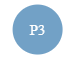
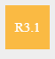
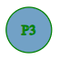
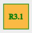
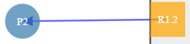
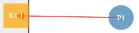
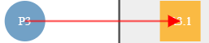
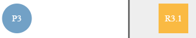

Deadlock Detection Using Resource Allocation Graph
Aim
The objective of this experiment is to provide a comprehensive understanding of Resource Allocation Graphs (RAGs) and their usage in operating systems for allocation of resources to processes and to detect potential deadlocks.
This simulation helps users visualize how resources and processes interact, and how deadlocks can be detected before they cause system failures. It serves as a practical tool to deepen one's understanding of deadlock detection mechanisms, which are crucial for designing robust, concurrent systems in operating systems and distributed computing environments.
Theory & Applications
Key Concepts
Resource Allocation Graph (RAG):
A type of Directed graph with nodes representing either programmes or resources and arrows representing either allocation of a resource to a programme, or the request by a programme to access a resource, it is useful in visualising which programme is holding and requesting which resource and which resource is being used or is free, it is also useful in determining if the condition of programmes and resources might result in a deadlock or not
Deadlock
A deadlock is a situation where processes are stuck. This happens when a set of processes cannot acquire the resources they have requested because those resources are held by other processes, and those processes are, in turn, holding onto resources needed by the first set. This results in a scenario where no process can continue its execution.
Finding Deadlock
The procedure of finding a deadlock depends on whether the resources are single instance or multi-instance. Since in our case we assume the resources are multiple instance, finding deadlock is more difficult, but generally, we can say that a deadlock may be present if the given 4 conditions are present in the RAG:
Applications in the Real World
Server Load Balancing – Using RAGs to evenly distribute requests across available servers and avoid bottlenecks.
Operating Systems – Managing process-resource allocation to detect and prevent deadlocks in CPU and memory usage.
Database Management – Ensuring transaction scheduling doesn’t lead to resource deadlocks.
Cloud Resource Management – Allocating virtual machines and storage resources efficiently to various services.
Traffic Systems – Coordinating traffic light resources and vehicle flows to prevent circular wait deadlocks.
Procedure
The procedure to this lab would be done in a two-step way:
Creating the RAG using the input given by the user:
Enter the number of resources and specify the instances for each resource.
Enter the number of processes to include in the graph.
To add a Request edge, right-click on a process, then right-click on the resource it is requesting.
To add an Assignment edge, right-click on a resource, then right-click on the process that holds it.
Finding Deadlock in the Given Graph:
Check for the four necessary conditions for deadlock:
Mutual Exclusion: Each resource can be held by only one process. (This is always true.)
No Preemption: Resources must be released manually before being reassigned. (This is also always true.)
Hold and Wait: For each process, check if it is holding a resource while requesting another that is currently held. If true, the edge is highlighted in yellow. (toggle 'view hold & wait')
Circular Wait: Use DFS on each node to check for a cycle. If a cycle is found, the edge is highlighted in green. (toggle 'view circular wait')
Finally, we would have not only found what the RAG for the given programme and resources in the given condition is but also found if the graph results in a deadlock or not.
Code
Example programs
// JavaScript Code Example
// Node Structure: Defines the processes and resources in the system
const nodes = [
{ id: 'P1', type: 'process' },
{ id: 'P2', type: 'process' },
{ id: 'R1.1', type: 'resource', group: 'R1' },
{ id: 'R1.2', type: 'resource', group: 'R1' },
{ id: 'R2.1', type: 'resource', group: 'R2' }
];
// Links Structure: Defines the relationships (edges) between processes and resources
const links = [
{ source: 'P1', target: 'R1.1' },
{ source: 'R1.2', target: 'P2' },
{ source: 'P2', target: 'R2.1' }
];
// Function to detect all circular waits (causing deadlocks) and return involved edges
function detectAllCycleEdges(links) {
let visited = new Set(); // Tracks nodes that have been fully processed
let stack = new Set(); // Tracks nodes in the current DFS recursion
let edgeStack = []; // Tracks the edges being traversed in the current DFS path
let allCycleEdges = []; // To store all the cycles detected
// Helper function to perform Depth-First Search (DFS) to find cycles
function dfs(node) {
if (stack.has(node)) {
// Cycle found: return the edges involved in this cycle
allCycleEdges.push([...edgeStack]); // Save a copy of the current edge stack
return;
}
if (visited.has(node)) {
// Node has already been fully processed, skip it
return;
}
// Mark the node as visited and add to the current recursion stack
visited.add(node);
stack.add(node);
// Traverse all outgoing edges from the current node
for (let link of links) {
if (link.source === node) {
// Add the current edge to the edge stack
edgeStack.push(link);
dfs(link.target); // Continue DFS to the target node
// Backtrack: remove the edge from the stack if no cycle found
edgeStack.pop();
}
}
// Backtrack: remove the node from the recursion stack
stack.delete(node);
}
// Start DFS from each node in nodes1
for (let node of nodes) {
dfs(node.id); // Perform DFS starting from the node's ID
}
return allCycleEdges; // Return all cycles found
}
// Function to calculate hold-wait edges (potential deadlock scenarios)
function calc_hold_wait_edges(){
yellowLinks=[];//empty
for(let link of links){
const sourceNode = nodes.find(node => node.id === link.source.id || node.id === link.source);
const targetNode = nodes.find(node => node.id === link.target.id || node.id === link.target);
if(sourceNode.type==="resource" && targetNode.type==="process"){//hold wait can only from resource to process and + process to another resource
for (let link1 of links){
if(link.target===link1.source){
for(let link2 of links){
if(link2.source===link1.target){
yellowLinks.push(link)
yellowLinks.push(link1)
}
}
}
}
}
}
console.log("Yellow_links calculated : " , yellowLinks);
}
// Function to add a new process node
function addNode(value) {
const numberOfNodes = value;
// Check if the input is a valid number
if (isNaN(numberOfNodes) || numberOfNodes <= 0) {
let message="Please Enter a Valid Number that is greater than 1";//althouh this is replaced by requird in form html
show_message(message);
return;
}
for (let i = 0; i < numberOfNodes; i++) {
const newNodeId = `P${nodes.filter((node) => node.type === "process").length + 1}`;
const newNode = {
id: newNodeId,
type: "process",
x: width / 2,
y: height / 2,};
nodes.push(newNode);
}
console.log("nodes : ", nodes);
hide_addProcess() //hide the form
renderGraph(); // Call renderGraph() once after adding all nodes
}
// Function to add multiple resources (Adds m resource each having n resource instances)
function addMultipleResources(value,value1) {
let m = value;
let n = value1
// Validate inputs: Must be natural numbers (positive integers)
if (isNaN(m) || isNaN(n) || m < 1 || n < 1 || !Number.isInteger(m) || !Number.isInteger(n)) {
let message="Please Enter a Valid Number that is greater than 1";//althouh this is replaced by requird in form html
show_message(message);
return;
}
// Find the highest existing resource number
const resourceNumbers = nodes
.filter(node => node.type === 'resource')
.map(node => parseInt(node.id.split('.')[0].substring(1)))
.filter(num => !isNaN(num));
let startingResourceNumber = (resourceNumbers.length > 0 ? Math.max(...resourceNumbers) : 0) + 1;
// Create m resources, each with n instances
for (let i = 0; i < m; i++) {
let resourceNumber = startingResourceNumber + i;
for (let j = 1; j <= n; j++) {
const newResourceId = `R${resourceNumber}.${j}`;
const newResource = { id: newResourceId, type: 'resource', group: `R${resourceNumber}` };
nodes.push(newResource);
}
}
console.log("nodes:", nodes);
renderGraph();
}
// Function to add a new resource instance
function addResourceInstance(value) {
const resourceNumber =value;
if (resourceNumber) {
const existingResources = nodes.filter(node =>
node.type === 'resource' && node.id.startsWith(`R${resourceNumber}.`)
);
if (existingResources.length > 0) {
let maxNumber = 0;
nodes.forEach(node => {
if (node.type === "resource" && node.id.startsWith(`R${resourceNumber}.`)) {
let match = node.id.match(/R\d+\.(\d+)$/); // Extract only the last numeric part
if (match) {
let num = parseInt(match[1]); // Convert to number
maxNumber = Math.max(maxNumber, num);
}
}
});
const newInstanceNumber = maxNumber + 1;
const newResourceId = `R${resourceNumber}.${newInstanceNumber}`;
const newResource = { id: newResourceId, type: 'resource', group: `R${resourceNumber}` };
nodes.push(newResource);
console.log("nodes : " , nodes);
} else {
const newResourceId = `R${resourceNumber}.1`;
const newResource = { id: newResourceId, type: 'resource', group: `R${resourceNumber}` };
nodes.push(newResource);
console.log("nodes : " , nodes);
}
renderGraph();
}
}
Practice
Instructions to Use
Circles represents Processes and Squares represents Resource-Instances

To select/de-select a Process/Resource-Instance, just right click on it.The selected element will be highlighted with green.

To create an Edge, first select a Process/Resource-Instance and then select another Process/Resource-Instance(Edge will be created)
process" class="Edge">is Assignment Edge
resoucre" class="Edge">is Resquest Edge
Trying to re-create existing edge, will delete it.(Selection should be as is existing edge, select the tail first and then the head of edge)


Two views are defined "View Hold-Wait" and "View Circular-Wait", both are of main conditions for a deadlock to occur.
To delete a Process/Resource-Instance right click on it after clicking Toggle Delete button.
"Each button’s label reflects its functionality"
Result
In this experiment, you created and interacted with a Resource Allocation Graph (RAG) to simulate the allocation and request of resources by processes. By adding multiple processes, resources, and resource instances, and visualizing their interactions, you observed how certain conditions-such as hold-and-wait and circular-wait can lead to a deadlock.
Through the graphical interface, you were able to identify where these deadlock conditions occurred in real time. This helped reinforce your understanding of how system deadlocks form and how they can be detected using RAG. You also learned how careful resource management and request handling are crucial to avoiding such issues in concurrent systems.
Quiz
ADD YOUR INSTRUCTIONS HERE
Read each question carefully before answering.
Select the correct option(s).
Click Next to move to the following question.
At the end, you can view your quiz report and retake the quiz if needed.